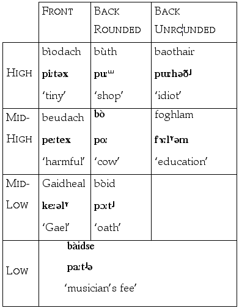

return to contents page
return to chapter 15 index
Further recordings of this language, not organized for teaching purposes, are available here , in the UCLA Phonetics Archive.
Scottish Gaelic Long Vowels
